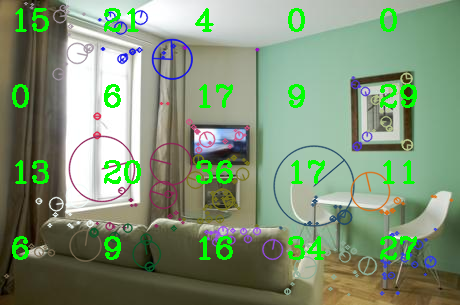
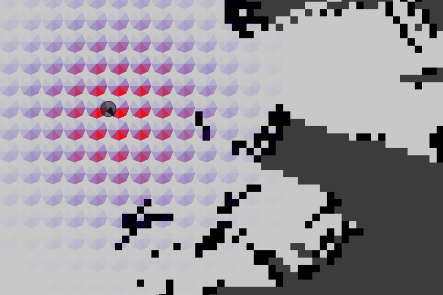
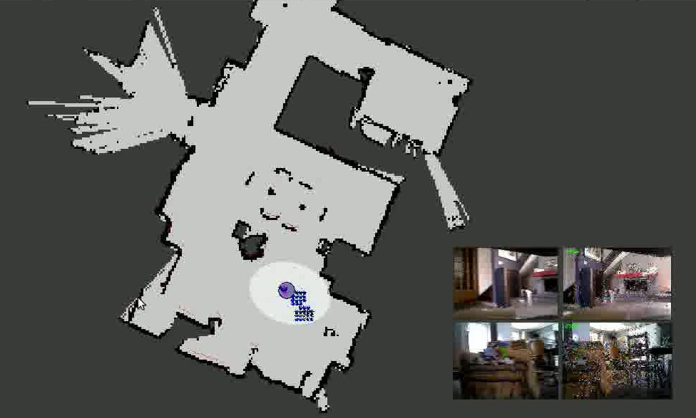

Extraire les caractéristiques visuelles¶
Pour améliorer la relocalisation visuelle, nous utilisons un système de découpage des images (appellé Binary Features).
Ce découpage d’image est déterminé par un nombre de lignes et de colonnes (paramétrables). Nous avons choisi 4 lignes pour 5 colonnes.
Chaque case est limité par un nombre maximum de caractéristiques visuelles utilisables.
Dans notre exemple, si il y a plus de 50 features, elles sont triées, puis seules les 50 premières sont prises en compte.
Ce type d’extraction d’informations, est utile pour répartir les mots sur toute l’image.
Apprentissage¶
L’apprentissage est implémentée dans la classe Learning dans le répertoire kinav/src/process.
 {kind=link}
{kind=link}
Lorsque l’on reçoit un bag d’une des deux caméras :
On calcule une matrice de poids correspondant au produit des deux gaussiennes :
- La gaussienne de la distance;
- La gaussienne de l’angle;
L’image de droite illuste une matrice de poids en fonction d’une position. Plus la celulle est éloignée, moins elle a de poids. Il en va de même pour l’angle.
L’intérêt d’utiliser les gaussiennes est d’étendre les mots appris aux zones adjacentes, afin d’augmenter les chances de relocalisation.
- Puis pour chaque mot du bag, on le traite :
- Met à jour l’index;
- Met à jour l’index inversé;
- Met à jour la grille pour l’affichage;
Quand toutes les images et positions ont été traitées, on appelle le service kinav/SaveWords, pour sauver tous les index inversés sur le système de fichier, ainsi que les TF/IDF. Les scores des index inversés sont pondérés par le . Puis ils sont triés en fonction du score, de manière décroissante, et enfin enregistrées.
Relocalisation visuelle¶
La relocalisation est implémentée dans la classe Relocation dans le répertoire kinav/src/process.
La relocalisation visuelle prend deux BagMsg en entrée et doit évaluer la position du robot à partir de cela. Pour réaliser cette tâche, un score est calculé pour chaque position de la grille connue.
- Les étapes de la relocalisation visuelle sont :
- Vérifier que les conditions d’entrées sont respectées (nombre de mot par exemple);
- Traiter chaque bag, afin de définir les scores;
- Evaluer la meilleure position en prenant en compte à la fois le score et le nombre de mots pour chaque emplacement;
- Calculer et sauvegarder quelques statistiques comme les variances et entropies.
{kind=link}
A gauche, voici un exemple de relocalisation :la couleur indiquant le nombre de mots pour chaque emplacement.
Pour qu’une position soit sélectionnée, il faut qu’elle possède un score supérieur au seuil définit en entrée, mais également un nombre de mots suffisants.
Enfin, nous calculons la variance des positions en fonction du score, pour déterminer s’il y a plusieurs positions candidats; en fonction de cela, la position est considéré comme de confiance ou non.
Pour calculer le score d’une position, nous additionnons tous les scores des mots qui ont votés pour cette position. Ce score est également pondéré par TF/IDF mais également par une gaussienne en de la position du mot dans l’image.
Voici le pseudo-code :
for Word in Bag:
InvertedIndex inverted_index = load(Word)
double score_idf = IDF(Word)
for Location in inverted_index:
double score_tf = TF(Location, Word)
double score_y = gaussian(Word.y, inverted_index(Location).y, 10)
Location real_location = Location * transform_camera_base_link
double total = score_idf * score_tf * score_y
scores[real_location] += total;
count[real_location] ++;